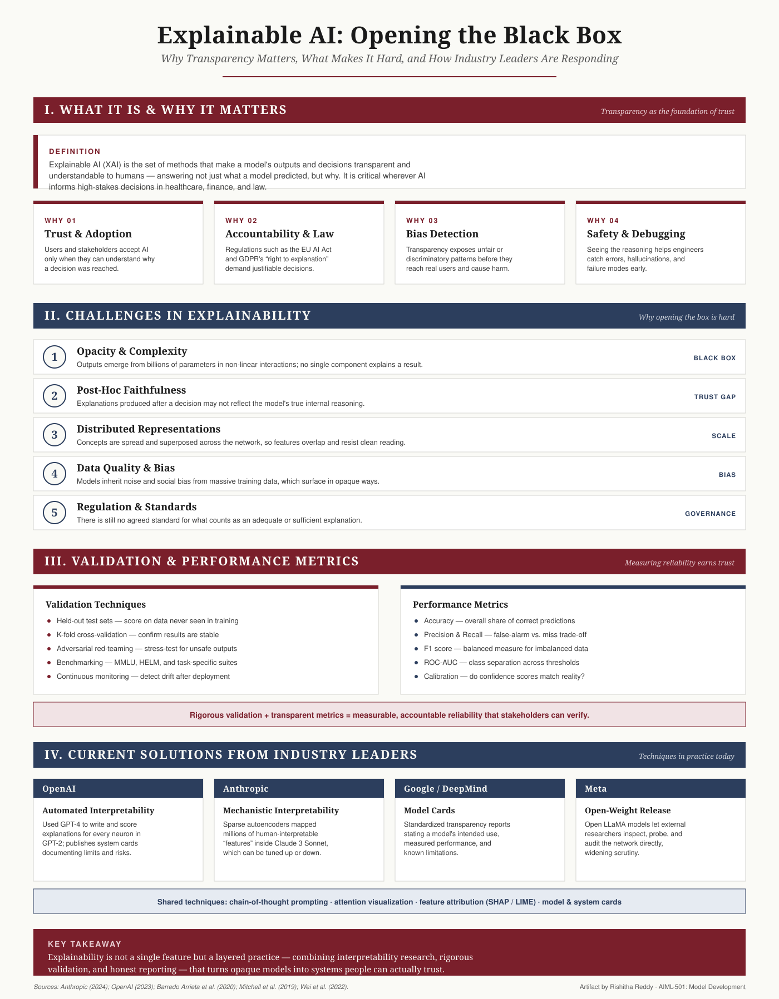

{kind=link}
{kind=link}
Explainable AI (XAI) — Opening the Black Box: Transparency, Challenges, Validation, and Industry Solutions
Back to artifacts
Explainability in Modern AI Systems
An infographic on Explainable AI (XAI) — why transparency matters, what makes interpreting large language models like GPT, Claude, Gemini, and LLaMA so difficult, how validation and performance metrics establish reliability, and what OpenAI, Anthropic, Google, and Meta are doing about it.

Title
Introduction
Large language models such as GPT, Claude, Gemini, and LLaMA are fluent and capable, yet fundamentally opaque: their decisions emerge from billions of parameters interacting in ways no single component can explain (Barredo Arrieta et al., 2020; Anthropic, 2024). Explainable AI (XAI) is the discipline of making those decisions transparent and understandable — and it matters most precisely where these models are now being deployed: healthcare, finance, and law. This artifact distills the topic into a single visual reference for a non-technical audience, covering what XAI is, why it is hard, how reliability is measured, and how the leading AI labs are responding.
Description
The infographic is organized into four connected sections:
- What It Is & Why It Matters — a working definition of XAI followed by four drivers of transparency: trust and adoption, accountability and law (the EU AI Act and GDPR), bias detection, and safety and debugging.
- Challenges in Explainability — five obstacles that are unlikely to vanish as models scale: black-box opacity, the faithfulness gap in post-hoc explanations, distributed and superposed representations, inherited data bias, and the absence of agreed standards.
- Validation & Performance Metrics — paired columns linking validation techniques (held-out testing, cross-validation, red-teaming, benchmarking, drift monitoring) with performance metrics (accuracy, precision and recall, F1, ROC-AUC, calibration), and a line on how the two together build verifiable reliability.
- Current Solutions from Industry Leaders — what OpenAI, Anthropic, Google/DeepMind, and Meta are doing, plus a band of shared techniques such as chain-of-thought prompting and feature attribution.
A closing "key takeaway" panel and a source line complete the piece. Color-coded section bands — in the portfolio's maroon and navy — and a consistent card schema let a reader scan by theme.
Objective
To satisfy the AIML-501 Workshop Four outcomes: explain the obstacles to interpreting generative AI, summarize industry techniques for improving transparency, show how validation and performance metrics support reliability, and convey all of it clearly to a non-technical audience. The artifact deliberately exercises a different skill set than my earlier algorithm, neural-network, and infrastructure pieces — here the emphasis is on responsible-AI communication, interpretability research, and trust engineering rather than architecture or cost analysis. For my own security and research focus, explainability is also the connective tissue between model robustness and accountability: you cannot defend, audit, or govern a system whose reasoning you cannot inspect.
Process
The artifact was developed in five steps.
- Research. Reviewed foundational XAI literature and current interpretability work from the major labs to frame the challenges and solutions accurately (Barredo Arrieta et al., 2020; OpenAI, 2023; Anthropic, 2024).
- Synthesis. Distilled the material into four themes — definition and importance, challenges, validation and metrics, and industry solutions — mapped directly to the assignment's required content.
- Information architecture. Structured each theme as a scannable block so a reader can move from "why" to "what's hard" to "how we measure" to "who's solving it."
- Visual design. Built the layout as a scalable SVG reusing the portfolio's editorial type and maroon/navy color system, with section bands and uniform cards for legibility at any size.
- Export & integration. Rendered both SVG and high-resolution PNG versions, embedded the SVG in this page, added downloadable copies, and registered the artifact in the portfolio index.
Explanatory Note
This graphic argues a single idea in four moves: explainability is the foundation of trust, it is genuinely hard to achieve, it is made measurable through validation and performance metrics, and it is being advanced today by concrete industry techniques. The challenges section is intentionally honest that opacity and the post-hoc faithfulness gap are persistent problems rather than solved ones, while the validation section shows that even without full transparency, reliability can still be quantified and held accountable. Together, explainability, validation, and metrics convert opaque models into systems whose behavior can be inspected, measured, and trusted.
The design choices serve a non-technical reader. A left-to-right reading order moves from concept to consequence; the maroon and navy bands separate the four themes at a glance; and uniform cards keep each idea to a single, digestible claim. The four-organization comparison grounds abstract techniques in recognizable names — OpenAI's automated neuron explanations, Anthropic's feature mapping, Google's model cards, and Meta's open-weight releases — so the audience leaves with a clear picture of who is doing what, and why it matters.
References
Anthropic. (2024, May 21). Mapping the mind of a large language model. https://www.anthropic.com/research/mapping-mind-language-model
Barredo Arrieta, A., Díaz-Rodríguez, N., Del Ser, J., Bennetot, A., Tabik, S., Barbado, A., García, S., Gil-López, S., Molina, D., Benjamins, R., Chatila, R., & Herrera, F. (2020). Explainable Artificial Intelligence (XAI): Concepts, taxonomies, opportunities and challenges toward responsible AI. Information Fusion, 58, 82–115. https://doi.org/10.1016/j.inffus.2019.12.012
Mitchell, M., Wu, S., Zaldivar, A., Barnes, P., Vasserman, L., Hutchinson, B., Spitzer, E., Raji, I. D., & Gebru, T. (2019). Model cards for model reporting. Proceedings of the Conference on Fairness, Accountability, and Transparency, 220–229. https://doi.org/10.1145/3287560.3287596
OpenAI. (2023, May 9). Language models can explain neurons in language models. https://openai.com/index/language-models-can-explain-neurons-in-language-models/
Wei, J., Wang, X., Schuurmans, D., Bosma, M., Ichter, B., Xia, F., Chi, E., Le, Q., & Zhou, D. (2022). Chain-of-thought prompting elicits reasoning in large language models (arXiv:2201.11903). arXiv. https://arxiv.org/abs/2201.11903